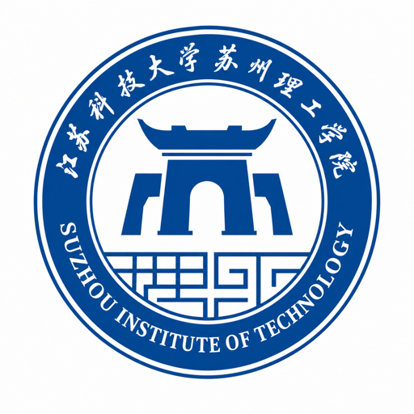

Embodied AI Engineer
让 VLA 走出仿真，驱动真实机器人。
具备机械臂、灵巧手与人形机器人项目经验，覆盖 teleoperation、数据集构建、模型训练、推理服务、技能调度和真实平台验证。近期重点在 LeRobot 生态、ACT、Diffusion Policy、π0/π0.5、GR00T、触觉反馈融合与异步推理部署。
70%
双臂精细操作任务成功率，较初始方案提升约 40 个百分点
500+
S101 单臂抓取任务 demonstration 采集与策略验证
3 类
机械臂、灵巧手、人形机器人平台适配与部署经验
No.1
本科综合排名第一，2024 年国家奖学金获得者
个人概览
能把研究模型接到真实设备上的工程型选手
端到端闭环
熟悉机器人任务从示教采集、数据清洗、训练配置、评估对比到真机推理的完整流程，能快速定位数据、模型和控制链路问题。
真实平台适配
完成多家机器人产品的 teleoperation、data collection、inference、replay 模块适配，关注接口稳定性与部署可维护性。
多模态策略
围绕 VLA/VLM Policy、触觉 encoder、RTC 与异步推理进行实验验证，推动策略从离线训练走向实时任务执行。
工作与教育
机器人实践 + 软件工程训练
2026.01 - 至今
具身智能全栈工程师
FMC3-Robotics · 上海
- 负责机器人真实平台适配、数据采集链路、策略训练脚本、推理服务与部署验证。
- 在机械臂、灵巧手、人形机器人项目中推进 VLA/VLM Policy 的工程落地。
2021.09 - 2025.06

江苏科技大学苏州理工学院
计算机科学与技术 · 成绩均分 90
- 本科综合排名第一，参与智能车、移动机器人、OpenMV 视觉应用等实践项目。
项目经历
从策略到真机，从单臂到人形
机械臂 + 智元灵巧手双臂协作操作
基于 LeRobot 搭建机械臂与带触觉感知的智元灵巧手双臂协作平台，完成控制、数采、训练与推理部署链路验证。
- 独立完成 teleoperation、data collection、inference、replay 模块适配，沉淀可复用机器人适配层。
- 采集双臂协同抓取与精细操作任务数据，基于 ACT、Diffusion Policy、π0.5 完成策略训练与真实平台部署。
- 在 π0.5 中引入 tactile encoder 融合触觉反馈，结合 RTC 与异步推理优化执行链路。
LeRobot
ACT
Diffusion Policy
π0.5
Tactile Encoder
LoRA
RTC
30% → 70%
双臂精细操作成功率提升
可复用
形成跨平台机器人适配层
傅利叶 GR2 人形机器人分拣任务
面向傅利叶 GR2 人形机器人货物分拣场景，完成操作策略向人形机器人本体的迁移适配，并打通感知、控制、推理与技能调度链路。
- 设计 GR2 腕部相机支架，使用外骨骼完成分拣场景数据采集，编写数据集转换与训练脚本。
- 基于 π0 与 GR00T 开展操作策略验证，适配 get_state / send_action 接口，编写 inference server。
- 集成 RoboOS 并接入 RoboBrain VLM，实现高层任务分解、多技能调度与分拣流程控制。
π0
GR00T
DDS
RoboOS
RoboBrain VLM
LeRobot
端到端
策略推理到技能调度闭环
人形迁移
完成 GR2 本体接口适配
S101 单臂抓取策略验证
围绕 S101 机械臂"异形物体夹取入盒"任务，完成数采、训练到真实机械臂推理部署的端到端验证。
- 完成机械臂、夹爪、相机与示教采集链路联调，采集 500+ 条 demonstration。
- 基于 ACT、Diffusion Policy、π0 开展策略训练与验证，完成模型训练、推理部署和闭环测试。
- 对比不同策略在异形物体抓取、夹取入盒场景下的动作稳定性、任务完成效果与部署流程。
ACT
Diffusion Policy
π0
异步推理
真实部署
500+
示教数据采集
闭环
训练、部署、测试完整打通
端到端推理闭环
从数据到真机执行的可复现实验链路
01
真实平台采集
接入机械臂、灵巧手、人形机器人与多相机输入，完成示教、外骨骼或任务过程数据采集。
02
数据集转换
统一状态、动作、图像和时间戳格式，沉淀 LeRobot Dataset、Replay 与质量检查流程。
03
策略训练对比
围绕 ACT、Diffusion Policy、π0/π0.5、GR00T 管理训练配置、Checkpoint 和实验指标。
04
推理服务部署
构建 inference server，适配 get_state / send_action，支持异步推理、RTC 与 action chunk 执行。
05
真机闭环验证
在真实任务中观察成功率、延迟、动作稳定性和失败模式，反向迭代数据与策略。
Demo 视频
真实机器人与视觉控制演示
Demo 0100:18
双臂灵巧手小物品精细抓取
双臂平台完成小目标定位、夹取与放置，展示灵巧手精细控制与真实任务稳定性。
平台
双臂灵巧手平台
策略
π0.5 + 触觉反馈
模式
真实平台推理
双臂协作
灵巧手
精细操作
Demo 0200:28
视觉关键点 retargeting 到灵巧手
通过视觉提取手部特征点与关节姿态，并 retargeting 到机器人灵巧手，实现稳定、准确的手内对指控制。
平台
RGB 视觉 + 灵巧手
策略
关键点提取 + Retargeting
模式
手内对指控制
手部关键点
Retargeting
手内对指
Demo 0301:03
MediaPipe 手部关键点与关节角解析
基于手部关键点估计实时解析关节角，为灵巧手映射、策略控制和动作数据生成提供输入。
平台
MediaPipe + 灵巧手映射
策略
关节角解析
模式
策略控制输入
MediaPipe
关节角
手势解析
Demo 0400:23
单臂物体抓取与放置多任务切换
单臂在多目标、多位置场景下完成抓取、搬运和放置，验证策略在不同物体上的执行稳定性。
平台
单臂真实平台
策略
多任务抓取放置策略
模式
多任务推理切换
单臂
多任务
抓取放置
Demo 0501:10
ACT + π0 任意位置抓取入盒
基于 ACT 和 π0 完成单臂任意位置抓取入盒，支持不同桌面位置下的目标抓取、移动与精准放置。
平台
单臂桌面操作平台
策略
ACT + π0
模式
任意位置抓取入盒
ACT
π0
抓取入盒
Demo 0600:14
傅利叶人形机器人灵巧手杯状物抓取
傅利叶人形机器人通过灵巧手完成杯状物稳定包络抓取，验证末端接触控制和真实平台执行能力。
平台
傅利叶人形机器人
策略
灵巧手抓取策略
模式
杯状物抓取推理
傅利叶
人形机器人
灵巧手
Demo 0700:43
Minimax 井字棋 + π0.5 棋子放置
井字棋决策使用 minimax 算法，棋子移动由 π0.5 结合视觉 prompts 控制放置位置，用视觉定位补足语言跟随性差的问题。
平台
人形机器人交互平台
策略
Minimax + π0.5
模式
视觉 prompts 放置
Minimax
π0.5
视觉 prompts
Demo 0800:58
π0.5 JAX 纸巾分拣
基于 π0.5 JAX 版本完成纸巾分拣任务，结合异步推理与 RTC 优化执行链路，提升真实平台动作连续性与响应效率。
平台
双臂真实平台
策略
π0.5 JAX
模式
异步推理 + RTC
π0.5 JAX
异步推理
RTC
Demo 0901:02
pi*0.6 ReCap 手机插拔精细操作
基于 pi*0.6 ReCap 强化学习完成手机接口插入与拔出，验证真实平台在小间隙、强接触约束下的精细操作稳定性。
平台
单臂真实平台
策略
pi*0.6 ReCap 强化学习
模式
手机插拔精细任务
pi*0.6 ReCap
强化学习
手机插拔
能力矩阵
工程、模型、数据、部署四线闭环
数据采集与数据集工程
Teleoperation、外骨骼采集、多相机数据、数据清洗、Replay、LeRobot Dataset、Demonstration 管理。
机器人平台适配
完成机械臂、灵巧手、人形机器人平台的 get_state / send_action、相机、夹爪、触觉与控制接口适配。
策略模型训练
基于 ACT、Diffusion Policy、π0/π0.5、GR00T 开展策略训练、配置管理、Checkpoint 管理与任务对比。
真机推理与实时执行
构建 inference server，支持异步推理、RTC、Action Chunk 执行、延迟优化与真实设备闭环测试。
多模态感知与融合
围绕 RGB 相机、腕部相机、触觉 encoder、VLM/RoboBrain VLM 进行多模态状态输入与反馈融合。
技能调度与任务编排
集成 RoboOS Skill 调用、高层任务分解、多技能调度与分拣流程控制。
评估与失败分析
关注成功率、动作稳定性、Baseline 对比、失败案例归因、数据分布检查与策略泛化表现。
AI 辅助工程开发
结合 Cursor、Claude Code、Codex 提升机器人接口适配、数据脚本开发、训练调参与实验迭代效率。
竞赛与荣誉
算法、机器人与综合能力积累
2024
国家奖学金
综合排名第一；连续三次人民奖学金、三好学生，国家励志奖学金。
智能车
全国大学生智能车竞赛智慧物流创意组
队长，全国三等奖 / 华东赛区二等奖。
模型训练
全国大学生智能车竞赛智慧医疗创意组
负责模型训练与量化，华东赛区二等奖。
机器人
航天杯移动机器人 AI 创新技术挑战赛
队长，全国三等奖。
科研实践
江苏省大学生创新创业训练计划项目
期刊：基于 OpenMV 的新型智能门锁设计。